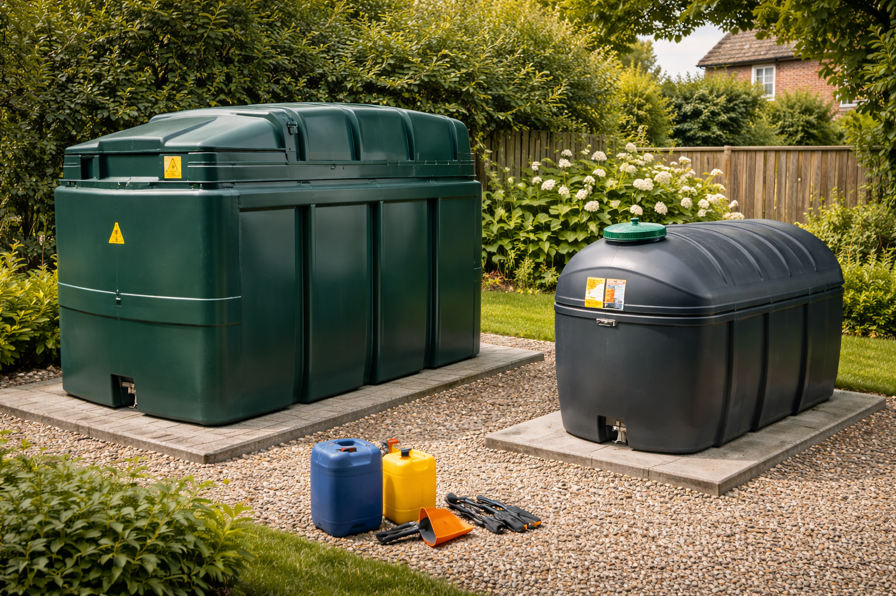
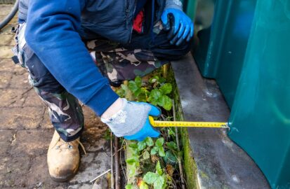
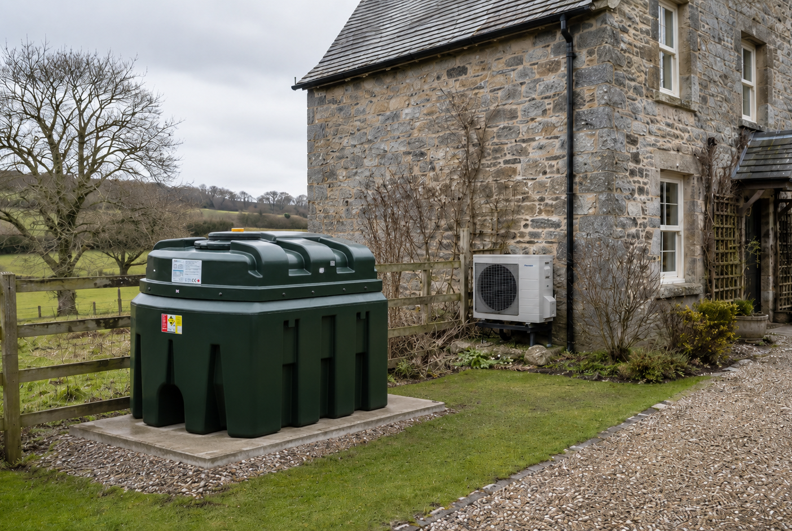
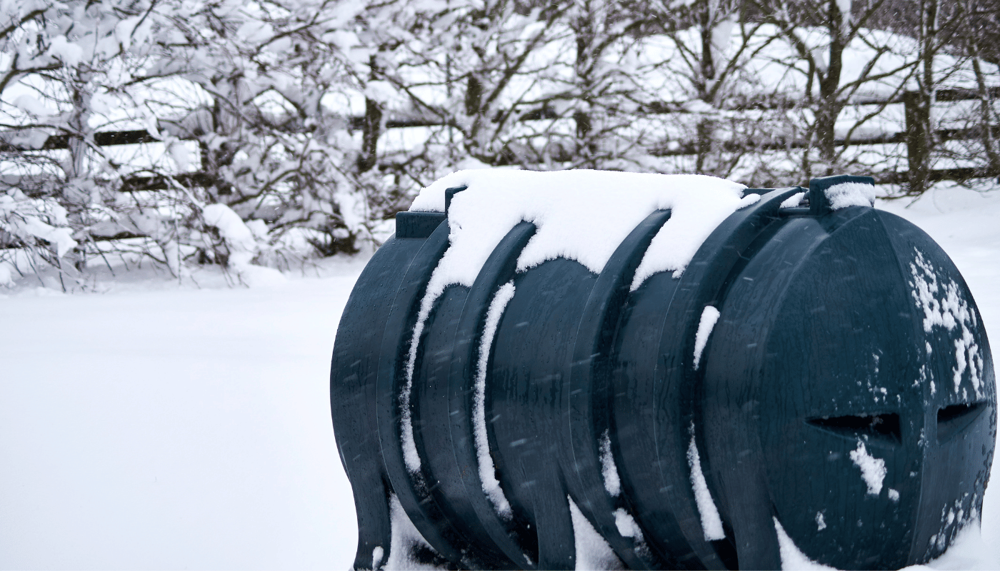
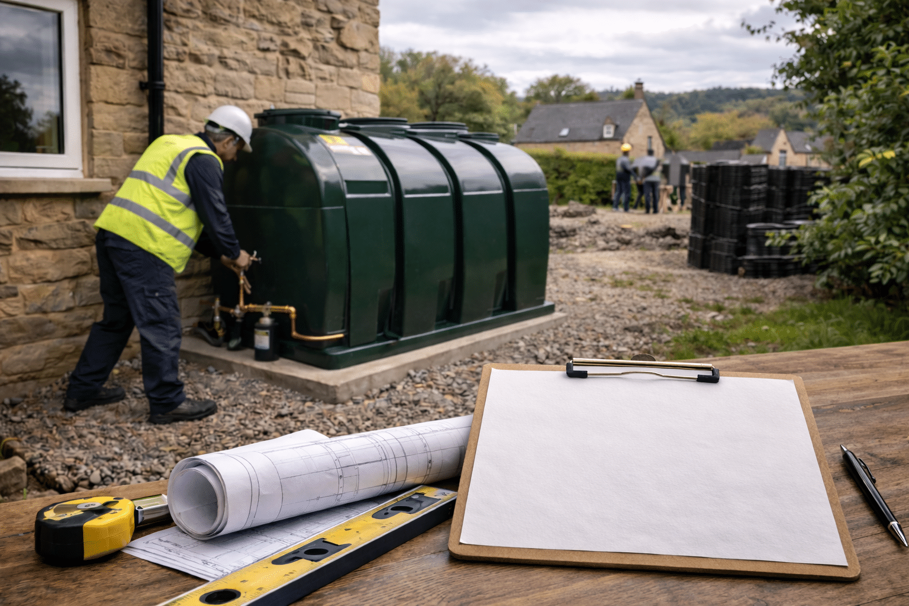
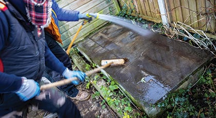

News & Expert Advice for Oil Tank Owners
Guides, regulation updates, maintenance tips and industry news — everything you need to make informed decisions about your oil tank.
Guides, regulation updates, maintenance tips and industry news — everything you need to make informed decisions about your oil tank.

The difference between a bunded and single-skin tank goes beyond price. Legal requirements, environmental risk and the location of your property all play a part. We explain everything in plain English.
Read the Full Guide
A plain-English guide to OFTEC regulations, BS 5410, bunding requirements, distance rules and what's required for a compliant installation.
How to spot early signs of tank deterioration — from visible cracks to unusual fuel smells — before a costly leak or environmental spill occurs.
A transparent breakdown of oil tank installation costs — supply, fitting, old tank removal, base preparation and what affects the final price.
Everything you need to know about replacing your oil heating tank — when to replace, what tank to choose, what to expect on installation day.
What to check when buying a property with oil-fired heating — tank condition, age, compliance, potential liabilities and what to ask the seller.

Heat pumps are widely promoted but aren't right for every property. We look at the genuine limitations and why oil heating remains the better choice for many homes.

Cold weather can cause issues ranging from frozen pipes to waxing fuel. Our winter checklist keeps your heating reliable when temperatures drop.

Most replacements fall under permitted development — but there are exceptions. We explain exactly when you do and don't need to apply.

Acting fast limits environmental damage and your legal liability. This step-by-step guide covers what to do in the first hour after an oil spill.
Our team is happy to advise — no question is too big or too small.